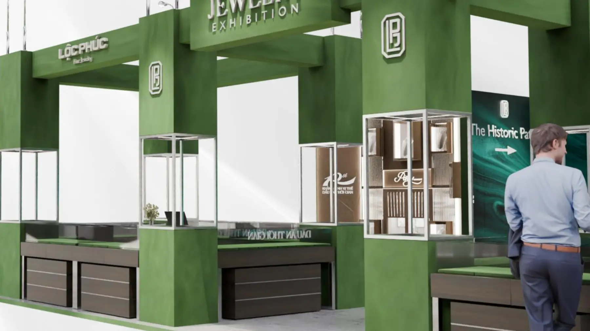
Dự án · Lộc Phúc Fine Jewelry · 2025
Lộc Phúc Fine Jewelry: Jewelry Exhibition 10 năm
Một thương hiệu trang sức tròn mười năm thì cái cần kể không phải từng món hàng, mà là quãng đường đã đi. Triển lãm 10 năm của Lộc Phúc Fine Jewelry lấy ý đó làm trục, đặt tên Khẳng định vị thế, Dấu ấn thời gian. Toàn bộ gian hàng được dựng 3D trước: để thương hiệu duyệt hình, để bên thi công đo kích thước, và để biết trước khách sẽ đi theo đường nào.
Bài toán
Bốn khu, một thương hiệu
Bốn tông màu phải cùng một nhà
Store tông đồng, Wedding tông hồng phấn, Family tông pastel nhiều màu, cộng khung xanh ô liu của gian hàng chính. Bốn bảng màu đứng cạnh nhau rất dễ thành bốn hội chợ khác nhau, nên khung kết cấu và chi tiết bo góc được giữ nguyên ở cả bốn, để màu thay đổi nhưng ngôn ngữ thì không.
Trưng bày vật nhỏ trong không gian lớn
Trang sức bé bằng đốt ngón tay, còn gian hàng thì tính bằng mét. Phần lớn công sức nằm ở hốc đèn: cao bao nhiêu thì vừa tầm mắt, sâu bao nhiêu thì không đổ bóng lên món hàng, và đặt cách nhau bao xa để hai người cùng xem mà không chạm vai.
Hình duyệt và bản vẽ thi công là hai việc
Cùng một mô hình phải ra được hai thứ: ảnh đẹp cho bên thương hiệu gật đầu, và bản vẽ có kích thước cho bên thi công báo giá. Dựng đẹp mà sai tỉ lệ thì đến lúc dựng thật mới lộ, lúc đó sửa rất đắt.
Hình ảnh
Đi hết một vòng triển lãm
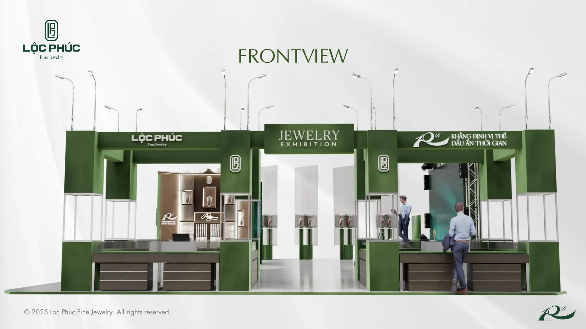
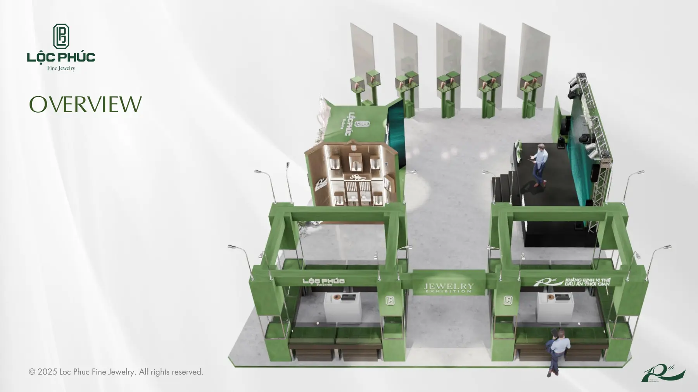
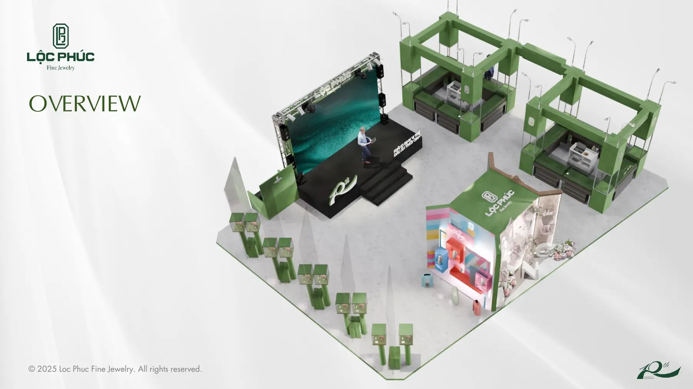
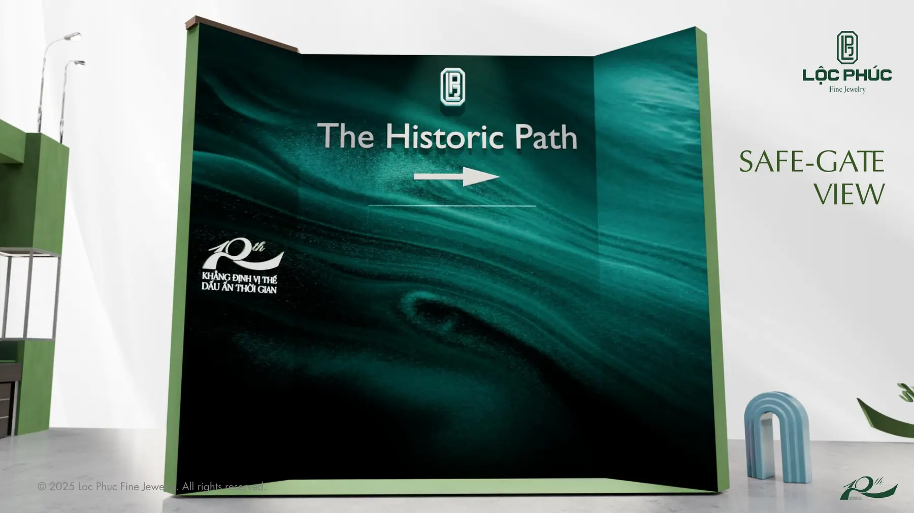
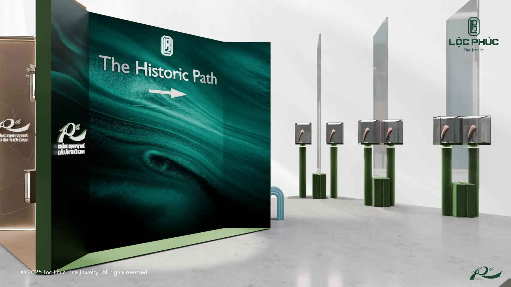
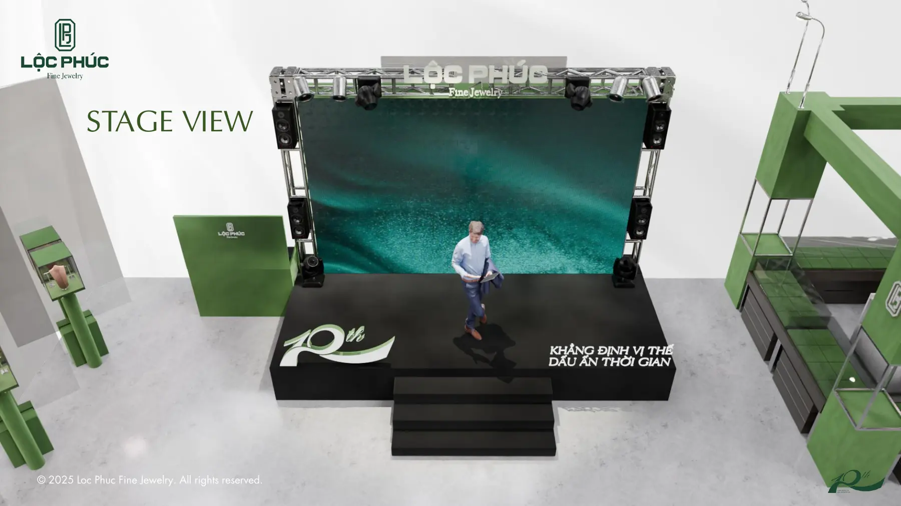
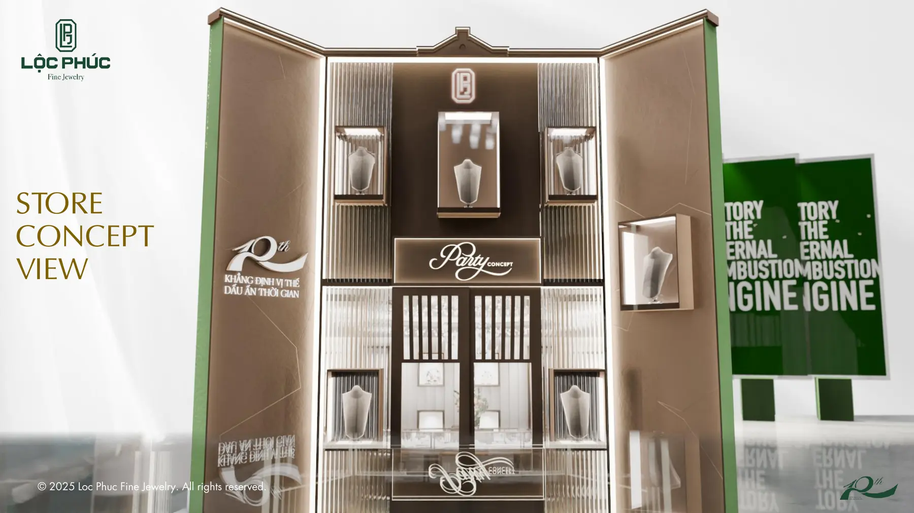
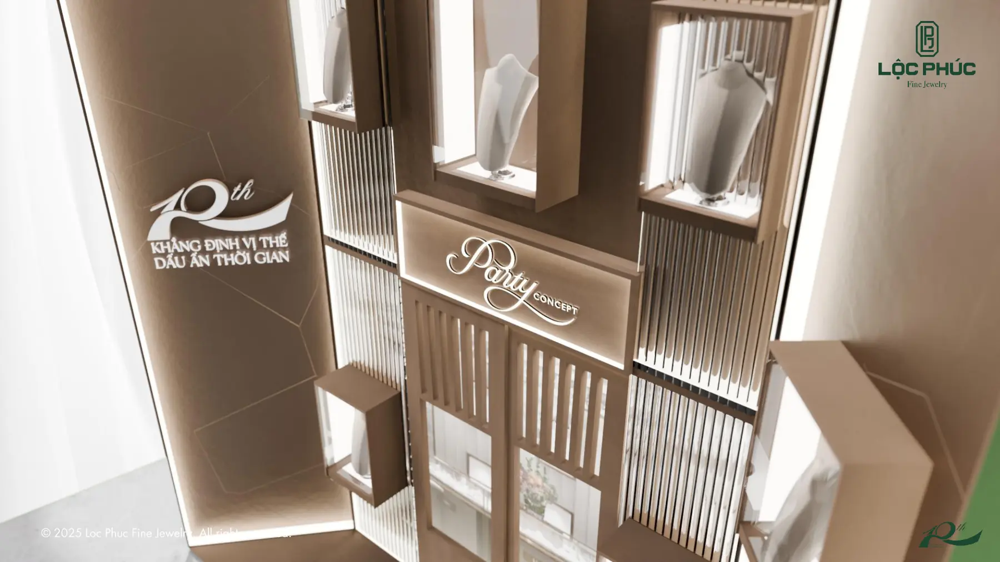
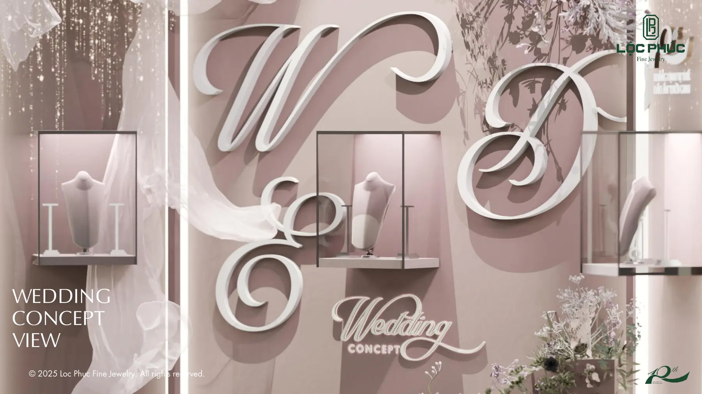
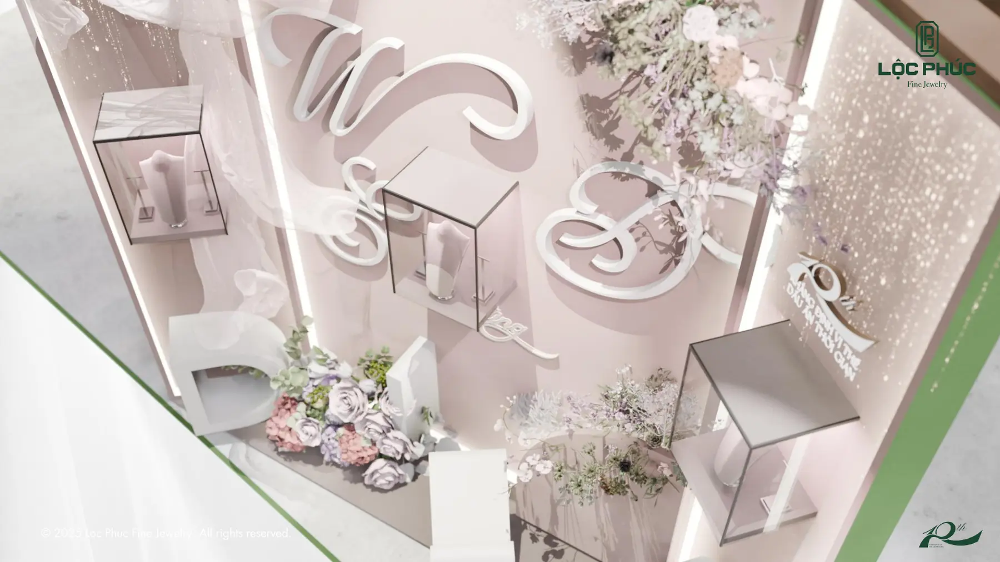
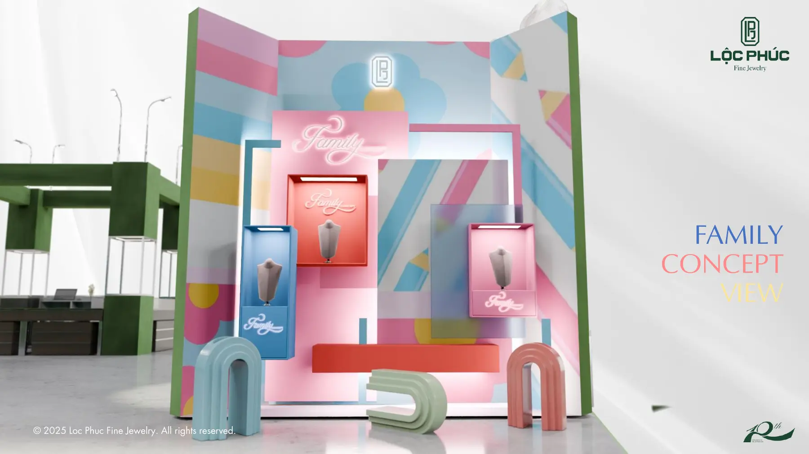
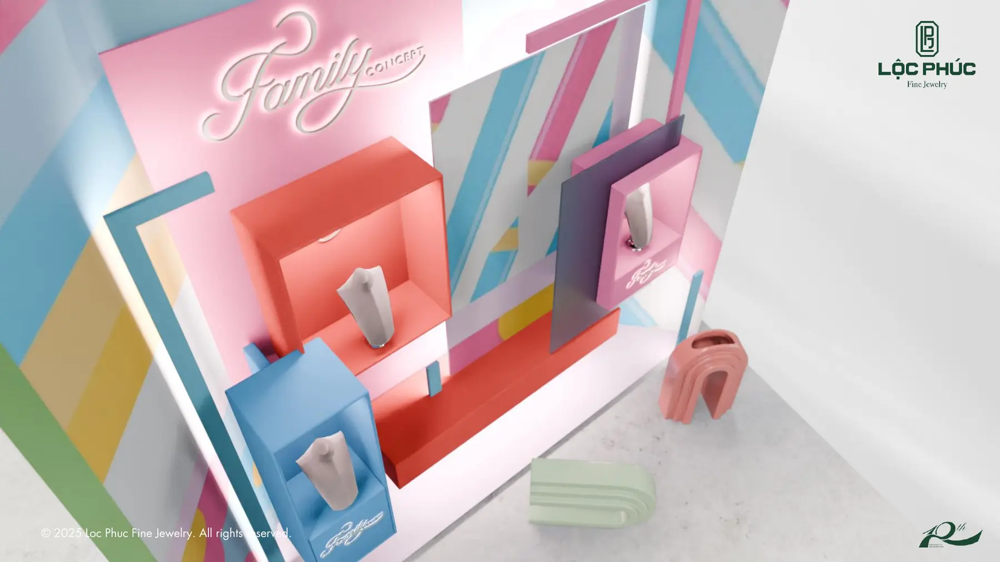
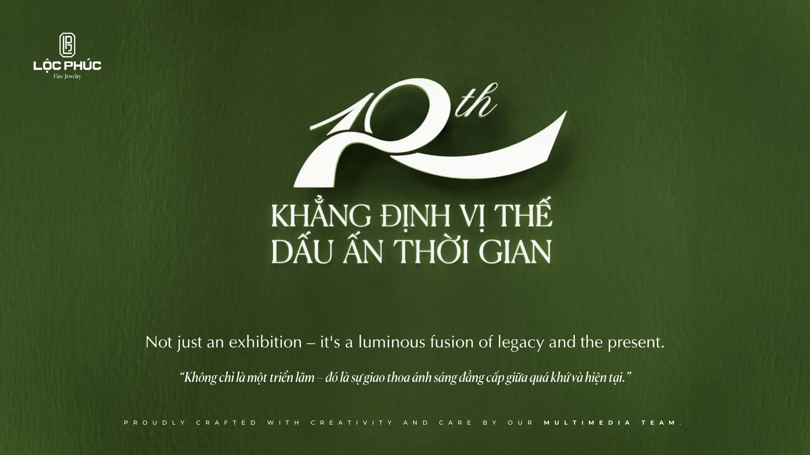
Cách làm
Từ mặt bằng tới hồ sơ duyệt
Mặt bằng và luồng đi
Chốt vị trí bốn khu, lối vào, lối ra và đường di chuyển của MC và model trước khi dựng bất cứ khối nào.
Khối thô và kích thước
Dựng khối đúng tỉ lệ, gán kích thước cho từng hạng mục để bên thi công báo giá được ngay từ vòng này.
Vật liệu theo từng khu
Bốn bảng màu tách nhau nhưng dùng chung một bộ chi tiết, để đi từ khu này sang khu kia vẫn thấy cùng một thương hiệu.
Ánh sáng trưng bày
Đèn hốc và đèn rọi được thử ở đúng độ cao mắt người xem, vì đây là thứ quyết định món hàng có bắt sáng hay không.
Hồ sơ duyệt
Xuất theo cụm: toàn cảnh, từng khu, rồi cận các chi tiết cần chốt. Người duyệt đi theo đúng thứ tự đó.
Muốn làm được shot như thế này?
Đây là đúng những kỹ năng trong lộ trình LXAM Academy, dựng hình, ánh sáng, render tách lớp, dựng phim. Học bằng dự án thật, có người sửa bài.